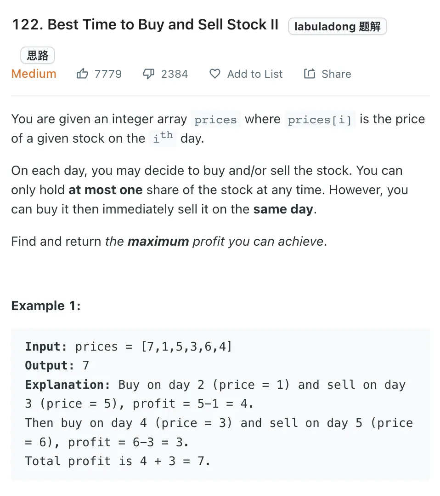
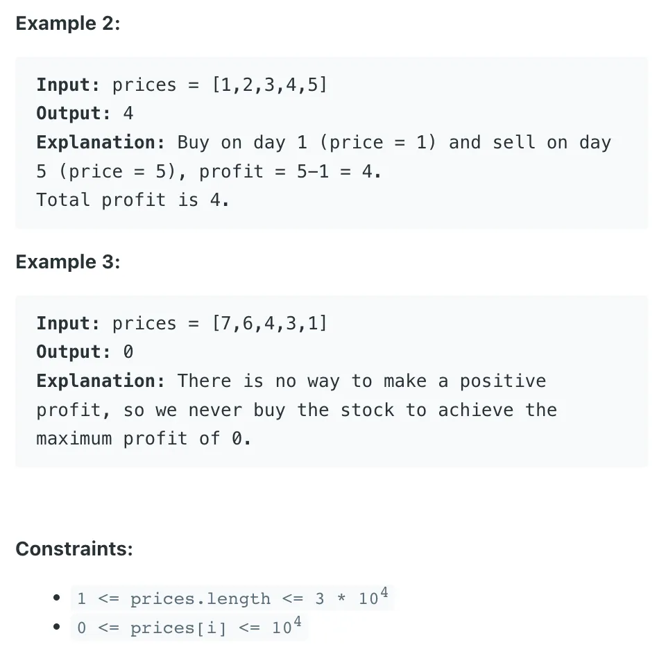

122. Best Time to Buy and Sell Stock II
Question


✍🏽 My Solution
Runtime: 3 ms, faster than 12.84% of Java online submissions for Best Time to Buy and Sell Stock II. Memory Usage: 43.9 MB, less than 60.58% of Java online submissions for Best Time to Buy and Sell Stock II.
class Solution {
public int maxProfit(int[] prices) {
int n = prices.length;
int[] dp = new int[2];
dp[0] = 0;
dp[1] = -prices[0];
for (int i = 1; i < n; i++) {
dp[0] = Math.max(dp[0], dp[1] + prices[i]);
dp[1] = Math.max(dp[1], dp[0] - prices[i]);
}
return dp[0];
}
}
🧠 Thought Process
- Why did I choose this particular implementation?
- 題目：可以無限次交易